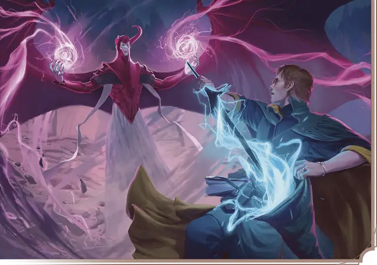

Клинок разрушения
Blade of Disaster
9 уровень, Вызов

Время сотворения 1 бонусное действие
Дистанция 60 футов
Компоненты В, С
Длительность Концентрация, вплоть до 1 минуты
Классы Волшебник, Колдун, Чародей
Вы создаете пространственный разлом в форме клинка длиной около 3 футов в свободном пространстве, которое вы можете видеть в пределах дистанции заклинания. Клинок существует до окончания действия заклинания. Когда вы накладываете это заклинание, то можете совершить до двух рукопашных атак заклинанием этим клинком против существа, неудерживаемого предмета или постройки в пределах 5 футов от клинка. При попадании цель получает 4к12 урона силовым полем. Эта атака считается критическим попаданием при выпадении на к20 значений «18–20». При критическом попадании клинок дополнительно наносит 8к12 урона силовым полем (в общей сложности 12к12 урона силовым полем).
Вы можете бонусным действием в свой ход переместить клинок на расстояние до 30 футов в свободное пространство, которое вы можете видеть, а затем снова совершить до двух рукопашных атак заклинанием этим клинком.
Клинок может беспрепятственно перемещаться через любые барьеры, в том числе созданные заклинанием силовая стена [wall of force].